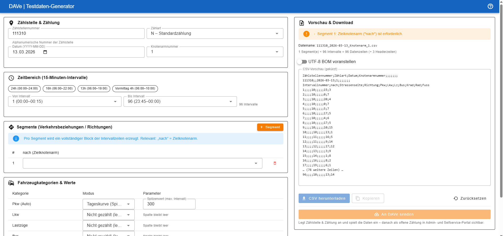

Realistische Zähldaten für DAVe — auf Knopfdruck, reproduzierbar und im korrekten Format. Statt mühsamer Handarbeit.
Claude Code zuerst die DAVe‑Repositories und die Dokumentation gründlich analysieren lassen.
Auf dieser Basis die Anwendung erstellen lassen und anschverfeinern.
Verkehrszählungen stecken voller Fachregeln. Die erste Version traf noch nicht alles — wir mussten die Anwendung mehrfach nachschärfen.
Um die Testdaten gegen das echte Backend zu schicken, mussten wir den kompletten DAVe‑Stack lokal zum Laufen bringen — aufwändig.
Ein klarer Assistent führt von der Auswahl bis zum fertigen Datensatz.
Die App rechnet die Details selbst aus — gültige Daten ohne Fummelei.
Daten im richtigen Format, direkt mit Vorschau und Download.
Der Weg bis zum fertigen Datensatz läuft auch ohne angebundenes DAVe‑System.
